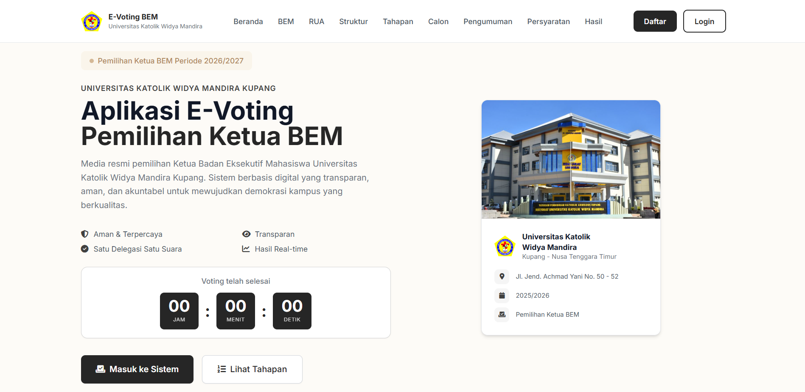
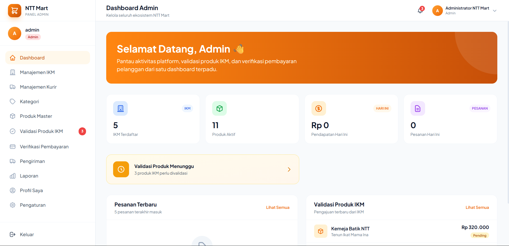

MY WORK


Featured Projects
A selection of projects I've developed to solve real problems.

Web Application
E-Voting BEM UNWIRA
Aplikasi e-voting berbasis web untuk mendukung proses pemilihan Ketua Badan Eksekutif Mahasiswa secara digital.
Laravel
PHP
MySQL
Bootstrap
JavaScript

Web Application
NTT Mart
Aplikasi web toko/market untuk mempermudah promosi dan penjualan produk khas Nusa Tenggara Timur secara digital.
Laravel
PHP
MySQL
Bootstrap
Cultural Platform
Kearifan Lokal Paus
Platform digital untuk mendokumentasikan sejarah, tradisi, budaya, dan kearifan lokal masyarakat Lamalera terkait tradisi penangkapan ikan paus.
Laravel
PHP
MySQL
JavaScript
Bootstrap
Information System
Sistem Pertanian Desa
Sistem informasi untuk membantu pengelolaan data pertanian desa, termasuk data petani, kelompok tani, lahan, dan hasil pertanian.
Laravel
PHP
MySQL
Bootstrap